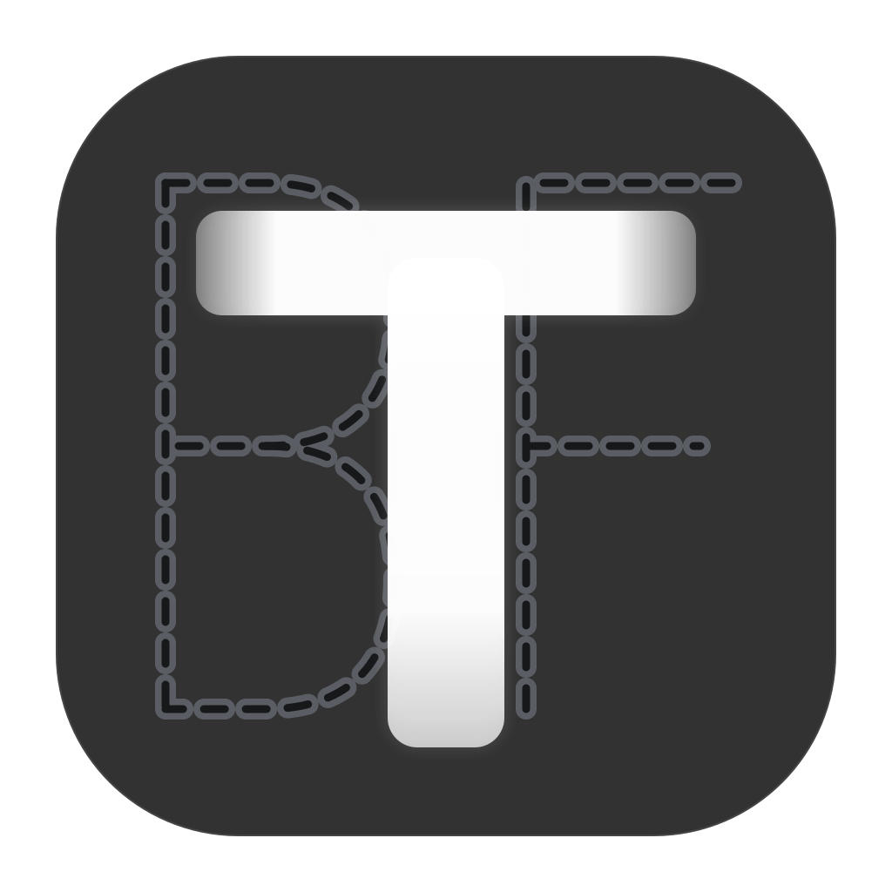
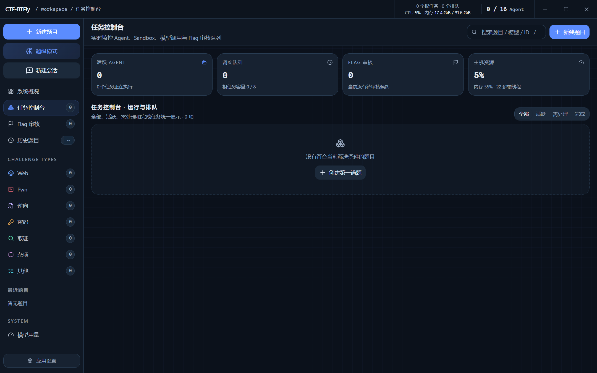

让多个模型真正参与协作
既可以由单个 Agent 快速推进，也可以让 Coordinator 拆题、Worker 独立验证，并通过共享黑板沉淀事实、证据与失败路线。
标准 Agent · 黑板多模型 · 超级调度 · Other 多问题
CTF-BTFlyWindows Agent Workbench 获取测试版
v2.7.9 最新测试版 · 2026.09
Windows 原生多 Agent
CTF 解题工作台
把模型、沙箱、终端、工具、证据与人工复核放进同一个本地工作流。无需 Docker Desktop，也能让标准 Agent、黑板协作和超级调度有序推进。
COMPLETE WORKBENCH
CTF-BTFly 把模型协作、受控执行、证据沉淀与人工复核放在同一工作台中，让解题过程可以观察、干预、恢复和交付。
既可以由单个 Agent 快速推进，也可以让 Coordinator 拆题、Worker 独立验证，并通过共享黑板沉淀事实、证据与失败路线。
标准 Agent · 黑板多模型 · 超级调度 · Other 多问题命令在每题独立的 Windows AppContainer 中运行，按任务控制网络、文件、基础工具、Tool Pack 与 MCP 能力，不依赖 Docker Desktop。
AppContainer · Job Object · ACL · Broker / Runner从题面和附件开始，持续展示过程、终端、文件与 Artifact；候选 Flag 或答案由人确认，最后生成结构化中文 Writeup。
实时过程 · 人工审核 · 暂停恢复 · 中文 WriteupSTART TO SOLVE
工作流围绕授权边界、可见过程和人工判断设计。第一次使用先完成沙箱、许可证、模型和基础工具准备。
完整解压，不要只复制主程序
放到当前用户可写、路径较短的目录，保持所有 EXE、defaults/ 与运行文件结构不变。
运行 CTF-BTFly.exe；首次 Broker 准备可能出现一次 UAC 请求。
在“Windows 沙箱”查看 preparing / ready / unavailable 和具体诊断。
导入许可证，检测至少一个模型；按需选择基础工具、Tool Pack 和 MCP。
候选结果必须经过人的确认
填写题面、授权范围、目标、Flag 格式，添加附件并选择网络范围。
快速主线用标准模式；需要分工用黑板；复杂路线用超级模式。
在过程、终端、文件与黑板中查看证据；可暂停、补充线索、切换模型或重试。
人工确认 Flag 或答案后，生成中文 WRITEUP.md 和关键 Artifact。
COLLABORATION
从单主线到多模型调度，模式决定 Agent 如何协作，不替代操作者的授权判断与最终复核。
一个主 Agent 沿单条上下文推进，适合目标清晰、需要快速验证的题目。
Coordinator 与 Worker 使用独立会话，共享工作项、事实、证据和失败路线。
主模型负责拆解和统一证据，Worker 按需执行命令、联网、工具调用与候选验证。
多个原始问题分别追踪答案、审核状态和逐题 WP，不把部分成功误判为整题完成。
TOOLS & EXTENSIONS
基础工具、Tool Pack 与 MCP 是三条独立能力通道。任务只获得启动时冻结并授权的能力集合。
通过用户选择的 Windows 目录与 JSON 动态检测；在 AppContainer 中只读、可执行。
绑定精确的 id / version / digest，校验和授权成功后才对后续任务可见。
经 daemon 网关按任务令牌、题型与策略过滤，并记录工具调用审计。
VERSION COMPARISON
1.3.1 的口径依据原版本功能定位与维护说明；历史 Docker 版仅用于迁移对照，不代表当前推荐架构。
| 能力 | 1.3.1 开源版 | 历史 Docker 版 | 2.7.9 Windows 原生版 |
|---|---|---|---|
| 定位 | 开源，具备基本功能 | 桌面端 + Docker 容器工作流 | 当前最新测试版 |
| 运行依赖 | 早期基础运行方案 | 需要 Docker Desktop / Engine | Windows 10 22H2 / 11 x64，无需 Docker 或 WSL |
| 隔离方式 | 基础能力 | 每题 Docker 容器 | AppContainer + Job Object + ACL + Broker / Runner |
| 镜像一键导入 | 没有 | 支持 TAR 一键导入 | 不需要容器镜像；使用基础工具、Tool Pack 与 MCP |
| 黑板模式 | 没有 | 支持 | 支持多模型黑板与独立会话 |
| 超级 / Other | 无 | 以标准与黑板为主 | 超级调度、按需 Worker、Other 多答案 |
| 工具扩展 | 基础功能 | 六类专项镜像、MCP、本机插件 | 动态基础工具、版本化 Tool Pack、MCP 审计网关 |
| 恢复与人工边界 | 基础流程 | 容器暂停恢复与 Flag 审核 | daemon 对账恢复、暂停继续、切换模型、候选人工确认 |
从 Docker 版迁移：不再维护六类镜像，也没有镜像 TAR 导入入口；工具能力改由基础工具、Tool Pack 和 MCP 组合提供。
从 1.3.1 升级认知：2.7.9 不只是补齐黑板，而是加入原生沙箱、多级调度、工具权限、过程审计、恢复与多答案闭环。
WINDOWS NATIVE SANDBOX
daemon 负责本地控制平面，Broker 负责受控提权与权限准备，Runner 在每题独立 AppContainer Profile 中启动受信 Pi。
Profile SID、工作区、控制目录、命名管道与 Job Object 随任务创建。
共享运行时与基础工具仅授予读取/执行；Tool Pack 权限绑定精确内容摘要。
模型与 MCP 访问经过 daemon relay，令牌绑定任务并限制调用范围。
无法证明一致性的在途状态进入暂停或 recovery_required，不会静默标记完成。
CTF-BTFLY 2.7.9 BETA
适用于获得授权的 CTF、靶场与安全研究。请勿扫描、攻击或导入未获授权的目标。
Windows x64 便携版 · 完整解压后运行